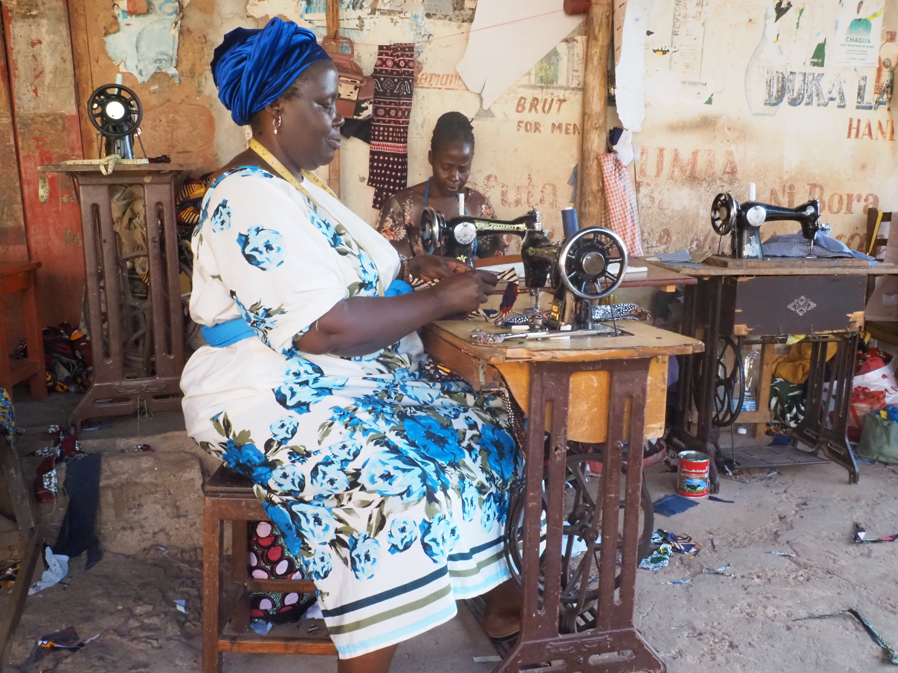

Je suis bénévole
Que vous disposiez de quelques heures par mois ou que vous souhaitiez vous engager plus régulièrement, chaque contribution compte. Tinara a besoin de personnes motivées, fiables et prêtes à agir concrètement.
Il n’est pas nécessaire d’avoir une expérience particulière. L’essentiel, c’est l’envie d’aider et de s’impliquer dans une dynamique collective utile.
- Accompagnement lors d’événements solidaires
- Soutien logistique et organisationnel
- Création de contenus digitaux
- Aide administrative ponctuelle
- Participation aux campagnes de dons
- Appui web et traductions
Votre temps est un don précieux. Le mettre au service d’une cause peut faire une vraie différence.
Je m’inscris